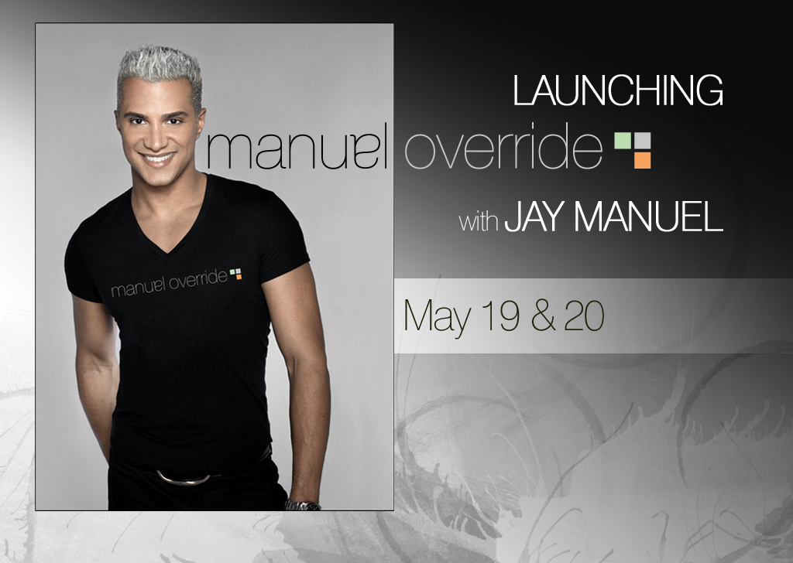
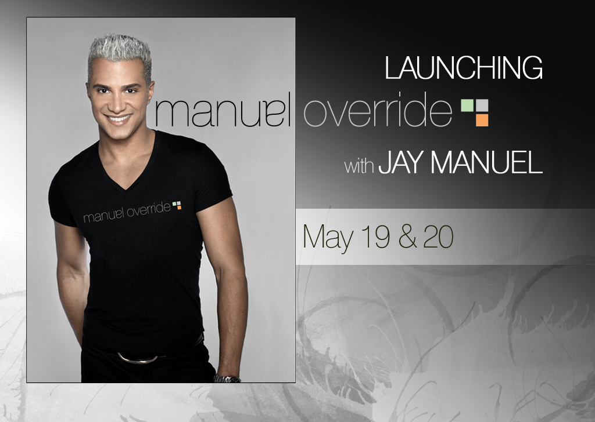
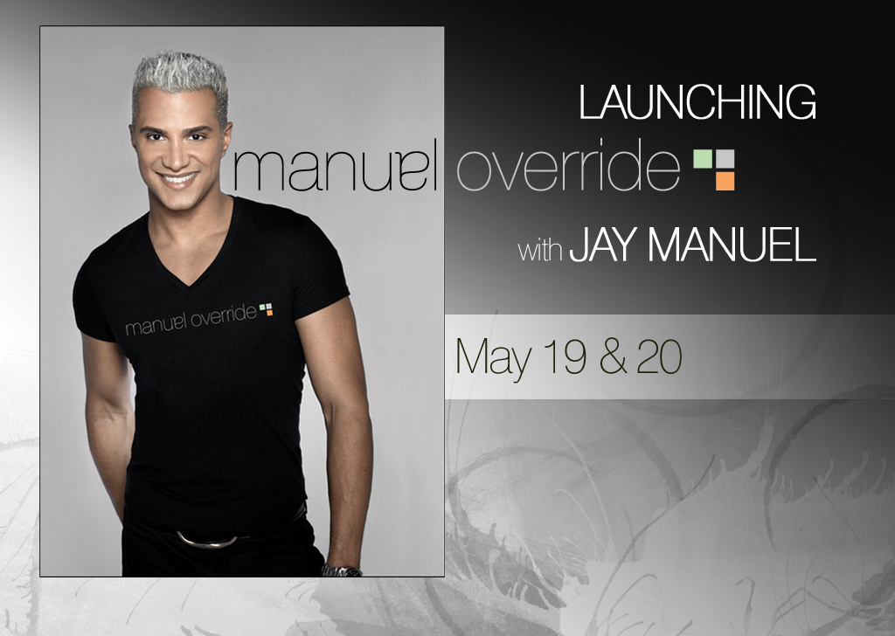

Tori French - Graphic Design
Still Pages - Marketing
The Shopping Channel
Working with elements and direction from the marketing team we take existing campaigns and adjust elements, rebuild or create new stills to be used on air.

Working with elements and direction from the marketing team we take existing campaigns and adjust elements, rebuild or create new stills to be used on air.
Create stills for specific brands to cairfy their offer for our customers. This could be anything from a price break down, to colour choices or ways to wear. This often includes retouching product images and colour correcting.
Created web banners, social media content and posters for the GTA Rollergirls Season.

Using Photoshop, Illustrator and After Effects we created, drew and combined Stock and vendor images to created Set Backgrounds for the Barco Tile using live at The Shopping Channel.